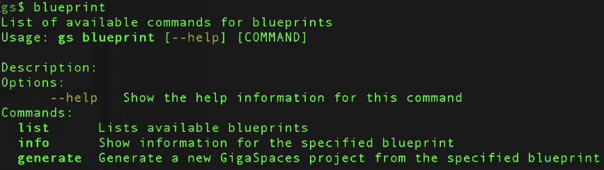
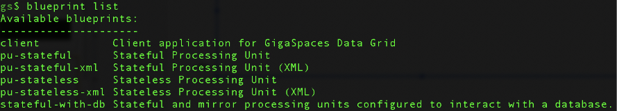
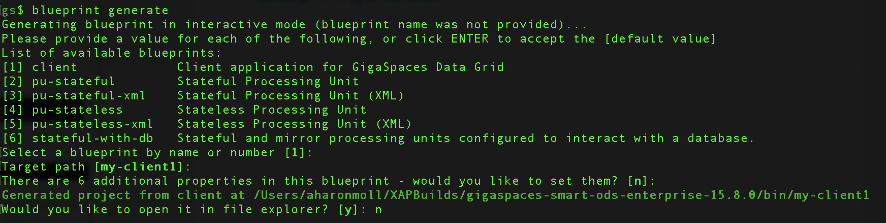
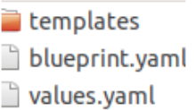
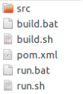

<?xml version="1.0" encoding="utf-8"?>
<html xmlns:MadCap="http://www.madcapsoftware.com/Schemas/MadCap.xsd">
    <head>
    </head>
    <body>
        <div class="product-bar">
            <p><a>Smart Cache</a>
            </p>
        </div>
        <h1 class="tc-pagetitle">Blueprints</h1>
        <h2>Overview</h2>
        <p>GigaSpaces products come packaged with a set of blueprints that can be used to create projects. &#160;These blueprints can be generated via the interactive shell. </p>
        <p>The purpose of blueprints is to make it easy to develop new services based on templates. Once you have defined and created a set of blueprints, they can serve to be an example of several types of template projects a developer can start from, making it easier to develop new projects. Using blueprints also enforced the service developer's conventions for developing each type of service. Blueprints also offer the reuse of common structure.</p>
        <div MadCap:conditions="NewSet.JustAColorForDivs">
            <h2>Commands</h2>
            <p>
                
            </p>
            <h2>Default Blueprint List</h2>
            <p>
                
            </p>
            <h2><a name="BlueprintGenerate"></a>Blueprint Generate</h2>
            <p>
                
            </p>
            <h2>Creating a Project</h2>
            <p>When creating a project, the cmd line leads the user through an interactive workflow where a number of options are defined as the configuration is created. </p>
            <p>A default configuration can be used to simplify the project creation process.</p>
            <h2>Adding Custom Blueprints</h2>
            <p>Custom blueprints can be added by creating a folder under: </p>
            <div class="easyui-tabs" plain="true" data-options="">
                <div title="Linux " style="padding:10px"><pre xml:space="preserve">gs-home/config/blueprints</pre>
                </div>
                <p>Then add a template and related scripts to that folder.</p>
                <p>For example, take a look at the client folder which is under the blueprints folder:</p>
                <div title="Windows " style="padding:10px"><pre xml:space="preserve">gs-home/config/blueprints/client/</pre>
                </div>
                <p>Which contains the following:</p>
                <p>
                    
                </p>
                <p>Template folder: The src should be placed here plus any deployment scripts if required.</p>
                <p>
                    
                </p><code class="language-bash">blueprint.yaml:</code>contains the description to display in the menu</div>
            <div class="easyui-tabs" plain="true" data-options=""><code class="language-bash">values yaml:</code>contains the default values to set to parameters as packages, version, etc. that can be overridden interactively during template generation. </div>
            <h2 plain="true" data-options="">Define Parameters</h2>
            <p plain="true" data-options="">Placeholders for parameters that should be overridden during blueprint creation will appear as:</p><pre xml:space="preserve">{{section.parameter}}</pre>
        </div>
        <p>In the values.yaml put the default:</p><pre xml:space="preserve">
[section]:
      [parameter]: <i>yourVal</i></pre>
        <h2>Developing a Blueprint</h2>
        <p>Following are the steps used to develop a blueprint:</p>
        <ol>
            <li>
                <p>Write the application as required and test it.</p>
            </li>
            <li>
                <p>Replace the configuration values you allow to change with a placeholder</p>
            </li>
            <li>
                <p>Copy the folder containing the files and templates to <i>gs-home/config/blueprints</i>.</p>
            </li>
            <li>
                <p>Remove the target folder, if it exists.</p>
            </li>
            <li>
                <p>Generate a new blueprint using the cmd line, override parameters, and test.</p>
            </li>
        </ol>
        <h2>Deploying a Generated Service in Kubernetes</h2>
        <p>After generating a project from the blueprint and building the related jar, it can be deployed to a kubernetes cluster in the similar manner any stateful/stateless client is deployed.</p>
        <p>If the service is of type PU:</p>
        <ul>
            <li>
                <p>Copy the created jar file from the target folder to a new local folder.</p>
            </li>
            <li>
                <p>Create a docker file named Dockerfile with the following content - example using the my-pu-stateless blueprint:</p>
            </li>
        </ul><pre xml:space="preserve">FROM <MadCap:variable name="General.ProductNameIE" />/xap-enterprises:16.3.0
ADD my-pu-stateless-0.1.jar /opt/gigaspaces/bin/pu.jar

ENTRYPOINT ["/opt/entrypoint.sh"]
CMD ["host","run-agent","--auto"]
</pre>
        <ul>
            <li>
                <p>In the directory that contains the Dockerfile and jar file, perform a Docker build operation and push the image:</p>
            </li>
        </ul><pre xml:space="preserve">docker build -t my-pu-statelss
docker push &lt;your-hub-user&gt;/my-pu-stateless[:&lt;tag&gt;]</pre>
        <ul>
            <li>
                <p>Deploy the custom-pu using the Docker image in the cluster:</p>
            </li>
        </ul><pre xml:space="preserve">helm install custom-pu <MadCap:variable name="General.ProductNameIE" />/xap-pu --set manager.name=xap, instances=1
resourcesUrl=pu, jar,
metrics.enabled=false,
image.repository=my-pu-stateless,
image.tag=latest</pre>
        <p>Run the command:</p><pre xml:space="preserve">kubectl get pods</pre>
        <p>and see the result:</p><pre xml:space="preserve">NAMEREADY		       STATUS  RESTARTS        AGE
custom-pu-xap-pu-0	 	1/1	Running 0	3s
demo-xap-pu-0		 	1/1	Running 0	26s
xap-grafana-67d9b898b5-s2nkj	1/1	Running	0	114s
xap-influxdb-0			1/1	Running	0	114s
xap-operator-8478949559-hb4pp	1/1	Running	0	114s
xap-xap-manager-0		1/1	Running	0	114s</pre>
    </body>
</html>